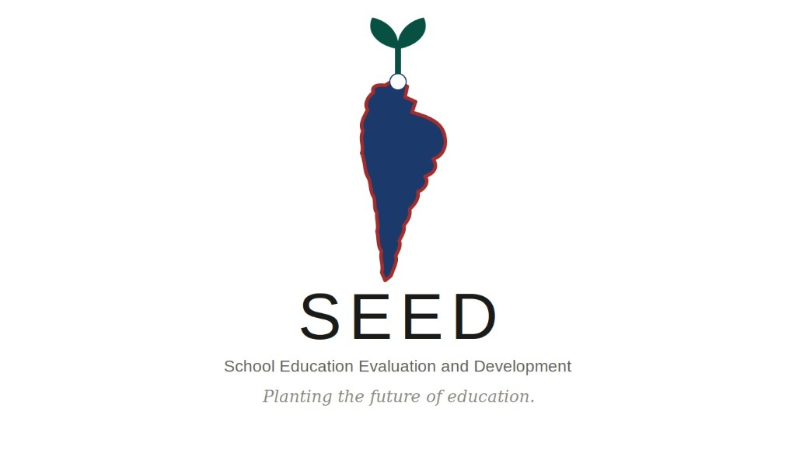

SEED
School Education Evaluation and Development
Planting the future of education.
Where does school support go — and where is it needed most?
The Problem
- Resources follow broad formulas, not real school conditions
- Reporting is fragmented and slow for schools and governments
- Decision-makers lack timely, actionable evidence
Who It Serves
Governments & NGOs
Schools
Researchers
Partners
How SEED Works
1. Decision Dashboard
Natural-language queries for allocation priorities
2. AI Reporting Toolkits
School profiles, classroom observations, funding briefs
3. Research Dataset API
Equity analytics for policy and intervention research
Data Flow
Collect
→
Diagnose
→
Allocate
AI reduces reporting friction and turns complex school data into decisions people can act on — not decorative chatbots.
Live Demo Screenshot
Replace with Enter.pro capture
Why It Matters
Fairer funding for high-need schools
Less admin burden on educators
Evidence-based public-service decisions
Education equity infrastructure
QR CODE
→ paste here
→ paste here
Try the Live Demo
37f7ba50441f48ff808dfbcadd92d0be.prod.enterapp.pro